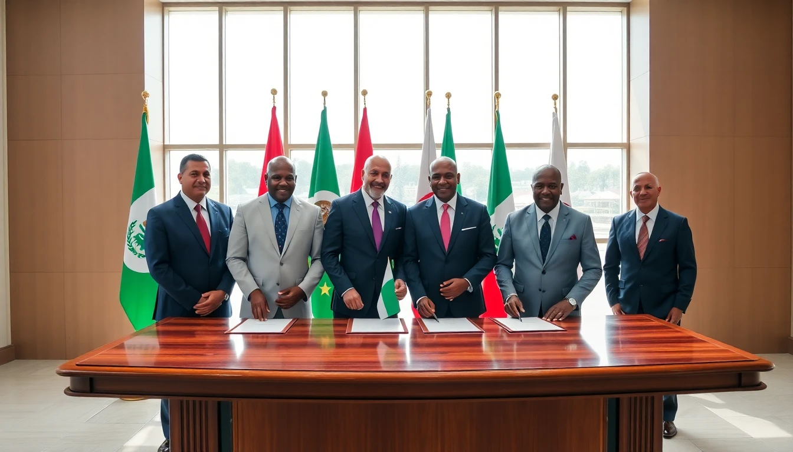

Abuja, Nigeria — Five West African nations announced a historic agreement Monday to form a unified federation, creating one of Africa's largest economic and political blocs. Nigeria, Benin, Togo, Ghana, and Côte d'Ivoire will unite as the "West African Federation" with Abuja as capital. The federation will have English and French as official languages alongside 14 indigenous languages and includes provisions for future West African nations to join.

The new federation encompasses ~350 million people and a combined GDP of $1.8 trillion, making it Africa's third-largest economy. Implementation will occur over 3 years with full integration by March 2039.